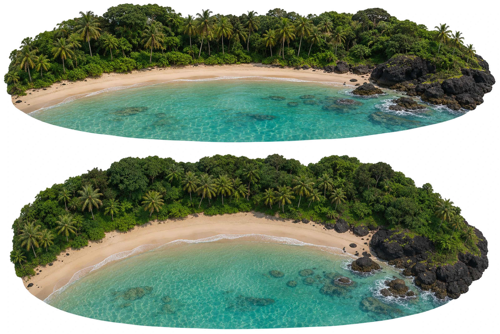
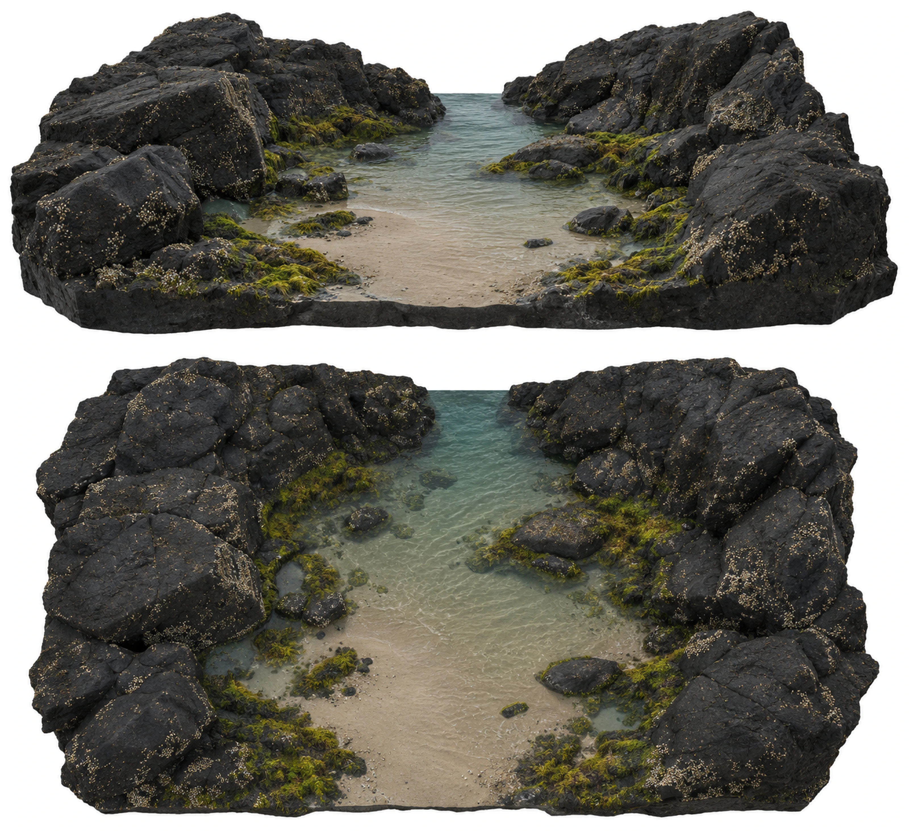
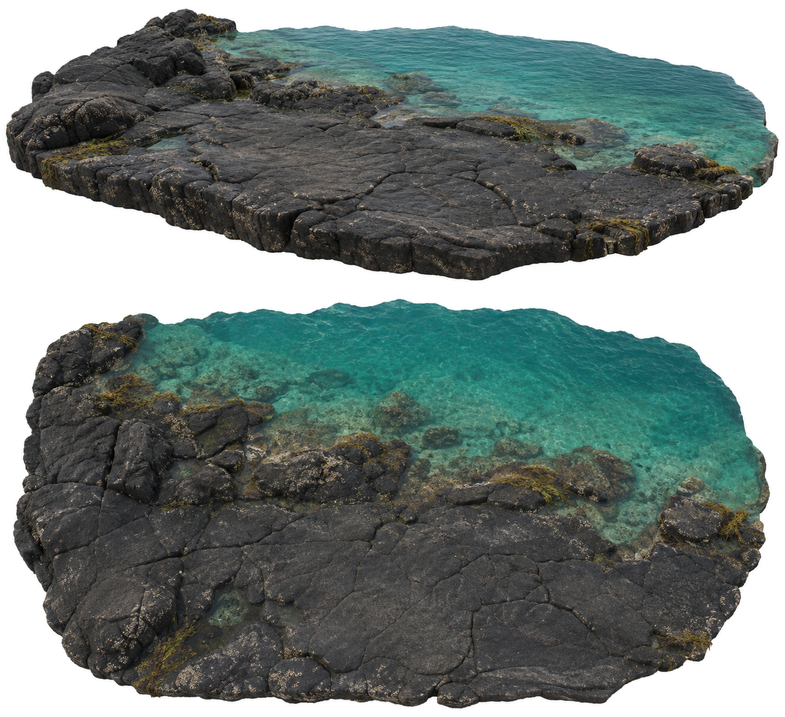
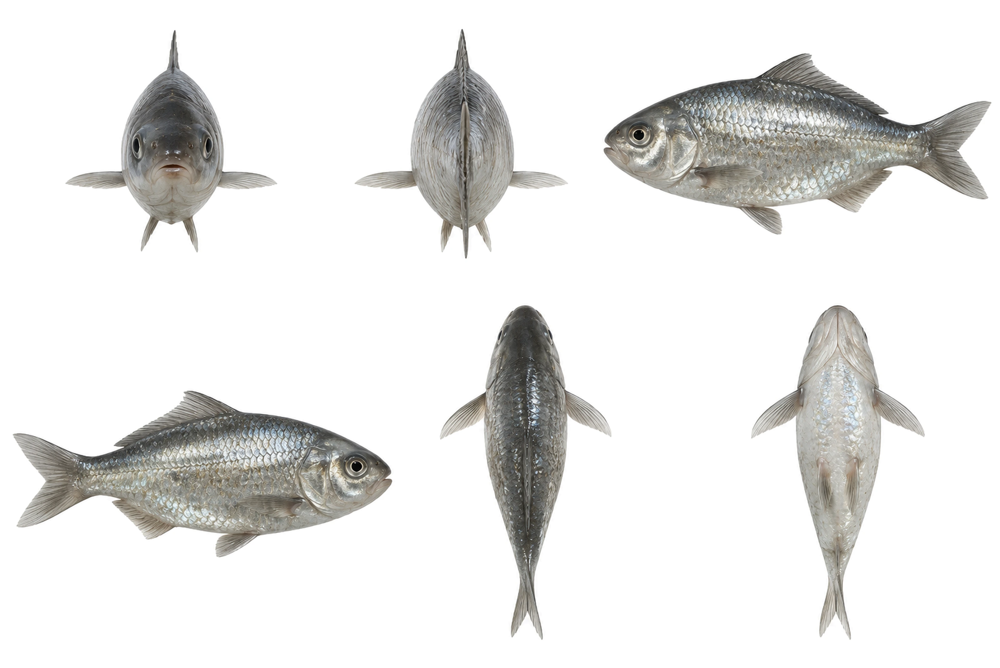
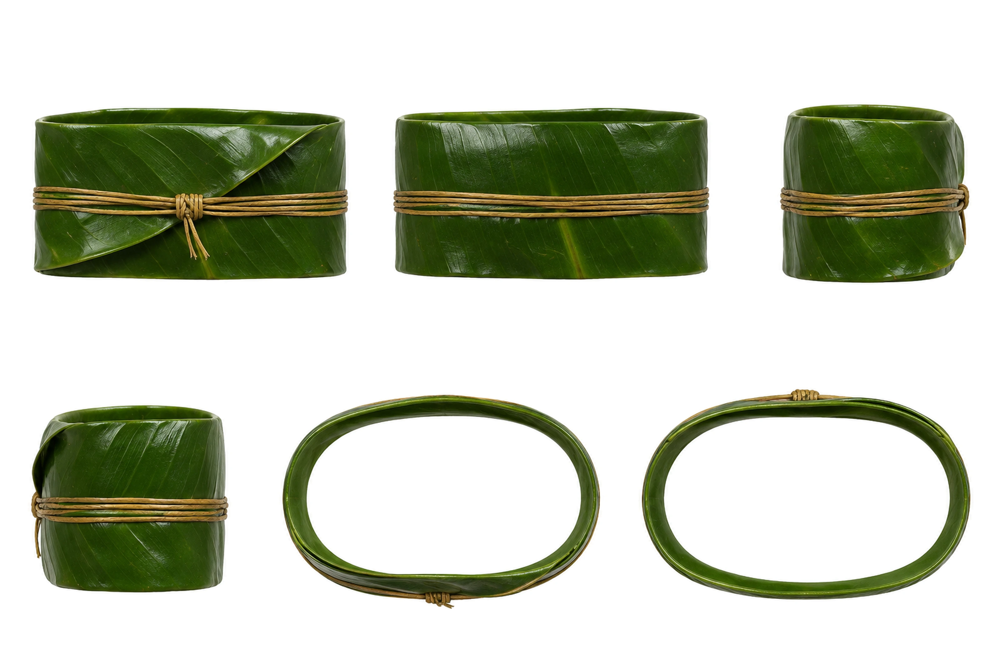
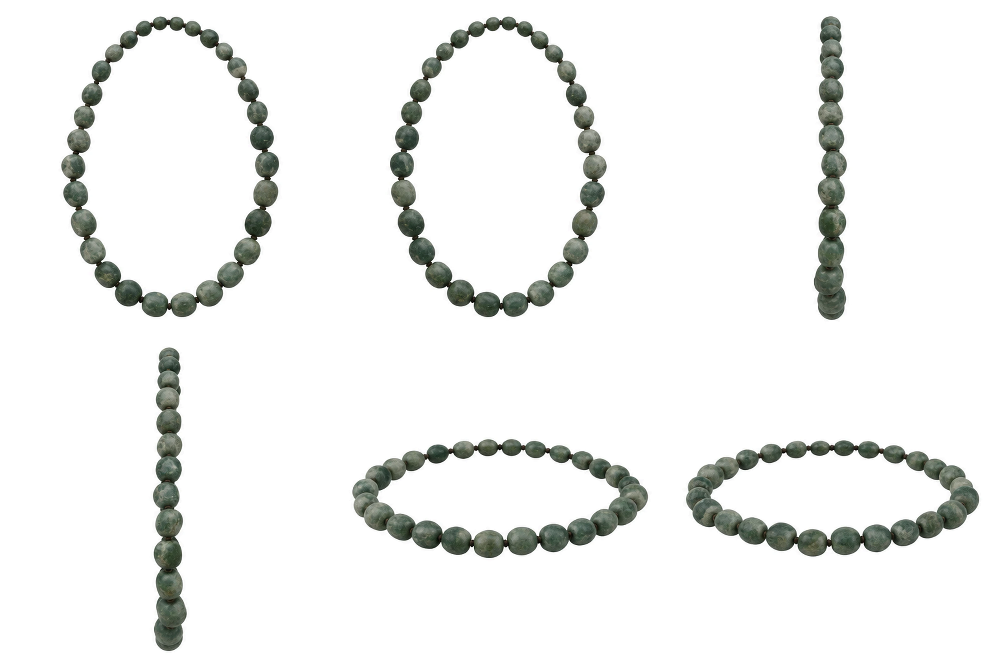

国外短剧
国外短剧 · 一集
正在连接在线视频…
视频简介
红发女子醒在陌生海滩，遇到一名高大的鲨裔守护者。他递来的鱼并未马上消除她的戒备。她走进黑岩潮池，遭遇伏在礁岩间的巨蟹。守护者挡在她面前击退巨蟹。岸边平静下来，女子替他缠好伤腕，两人在海边相对而坐。
在快手观看原视频 ↗制作资产
角色资产


场景资产

棕榈海滩
棕榈海滩的场景视觉设定，用于空间布局、光影与镜头背景。

黑岩潮池
黑岩潮池的场景视觉设定，用于空间布局、光影与镜头背景。

临海玄武岩平台
临海玄武岩平台的场景视觉设定，用于空间布局、光影与镜头背景。
道具资产

银鳞小鱼
薄腹、银亮鳞面和淡灰鳍。 守护者把鱼交在女子脚边，展示示好动作，鱼与脚尖的相对方向保持。 成片未完整展示的方位按可见造型补全。

叶片腕带
一片宽大墨绿叶包成腕部环带，以细纤维束住。 女子在岸边用它处理守护者伤腕，叶面朝外，纤维藏于靠镜头次侧。 成片未完整展示的方位按可见造型补全。

海绿珠项链
不完全规则的深海绿石珠穿深色细绳。 守护者身体连续标识，在对峙、打斗与坐下时保持珠串宽度。 成片未完整展示的方位按可见造型补全。

圆形小吊坠
朴素的暗铜圆片和细棕绳。 女子衣领前的小型识别道具，潮池湿润段避免改变链长。 成片未完整展示的方位按可见造型补全。
剧本与分镜
完整剧本与分镜脚本
国外短剧 · 一集 原片时长 178.59 秒 故事梗概 红发女子醒在陌生海滩，遇到一名高大的鲨裔守护者。他递来的鱼并未马上消除她的戒备。她走进黑岩潮池，遭遇伏在礁岩间的巨蟹。守护者挡在她面前击退巨蟹。岸边平静下来，女子替他缠好伤腕，两人在海边相对而坐。 人物 红发女子推动观察、逃离和最后的照料动作。鲨裔守护者在示好、挡护和受伤中承担主要行动。巨型岩蟹是潮池遭遇的威胁。 场景 棕榈海滩是醒来与接触的起点。黑岩潮池以狭窄岩道和水塘强化被困感。临海玄武岩平台提供结尾对坐的稳定空间。 道具用途 银鳞小鱼承担初次示好。叶片腕带承担结尾疗伤。项链和吊坠用于角色识别及剪辑连续。 剧本与分镜 按原片抽帧重建的复拍制作稿。画面未能确认的对白、音效与镜头节奏按下表执行。 | 镜号 | 画面内容 | 镜头视角 | 使用资产 | 动作描述 | 台词/旁白 | 音效 | 单镜头时长 | | 01 | 湿沙上的红发女子醒转 | 贴地面部特写 | 红发落难女子、棕榈海滩 | 睁眼，嘴边沙粒随呼吸轻动 | — | 沙浪和喘息 | 7.00秒 | | 02 | 守护者从棕榈林边靠近 | 女子肩后的全景 | 鲨裔守护者、红发落难女子、棕榈海滩 | 女子撑起身体，守护者稳步走向海边 | — | 潮声、重步 | 8.00秒 | | 03 | 人和鲨裔隔着湿沙站住 | 正面中景接低位全景 | 鲨裔守护者、海绿珠项链、红发落难女子 | 先显出背鳍和尾部，再回看女子的反应 | — | 浪拍海岸 | 11.00秒 | | 04 | 守护者屈膝示好 | 女子背后的双人中景 | 鲨裔守护者、红发落难女子、银鳞小鱼 | 守护者放低身体，把手伸向沙面 | — | 远浪 | 12.00秒 | | 05 | 小鱼落在女子赤足附近 | 低机位静物特写 | 银鳞小鱼、红发落难女子 | 指尖把鱼推到距脚尖一步的位置 | — | 鱼触湿沙 | 7.00秒 | | 06 | 女子决定沿海岸远离 | 双人反打切追踪全景 | 红发落难女子、鲨裔守护者、棕榈海滩 | 女子转身往黑礁方向走，守护者留在原处 | — | 涉水脚步 | 9.00秒 | | 07 | 女子进入黑色礁岩夹道 | 人物正面中景 | 红发落难女子、黑岩潮池 | 夹道内越走越窄，女子停住并抬起视线 | — | 岩洞回声 | 11.00秒 | | 08 | 女子听见身后动静 | 正面极近景 | 红发落难女子 | 眼睛睁大，呼吸变慢 | — | 细碎脚步、低频振动 | 10.00秒 | | 09 | 巨蟹从岩堆露出眼柄 | 远景与女子反应交叉 | 巨型岩蟹、红发落难女子、黑岩潮池 | 巨蟹沿岩石抬高，女子辨认真正轮廓 | — | 甲壳擦岩 | 11.00秒 | | 10 | 女子贴壁退，无处可退 | 略高位中近景 | 红发落难女子、黑岩潮池 | 手掌撑住两侧，努力留出后退的距离 | — | 岩面擦衣 | 10.00秒 | | 11 | 潮池前方猛然溅浪 | 纵深广角全景 | 鲨裔守护者、黑岩潮池 | 水幕升高，守护者从水边切入 | — | 急浪、落水 | 10.00秒 | | 12 | 守护者挡在女子与巨蟹之间 | 三方关系全景 | 鲨裔守护者、巨型岩蟹、红发落难女子 | 守护者伸臂挡住逼近的大钳，女子让开迎战路线 | — | 践水、钳肢碰撞 | 13.00秒 | | 13 | 守护者举起巨蟹 | 低角度动作中远景 | 鲨裔守护者、巨型岩蟹、黑岩潮池 | 海水拍起，守护者托住蟹身，把它推出女子所在路径 | — | 海水爆响、低吼 | 17.00秒 | | 14 | 战斗结束，女子重新靠近 | 守护者侧后中景 | 鲨裔守护者、红发落难女子 | 女子走向他，留意手腕的不适 | — | 浪声回落、脚步 | 12.00秒 | | 15 | 玄武岩平台上包扎伤腕 | 对坐中景切手部特写 | 叶片腕带、临海玄武岩平台、红发落难女子、鲨裔守护者 | 女子拉紧叶片边缘，把腕带固定 | — | 植物纤维摩擦、远浪 | 14.00秒 | | 16 | 二人迎着海面相对而坐 | 近景反打接海上落光大全景 | 鲨裔守护者、红发落难女子、临海玄武岩平台、海绿珠项链、圆形小吊坠 | 女子抬头看向守护者，最后让人物轮廓留在安静海平面前 | — | 缓潮、轻风 | 16.59秒 | 时长合计 178.59 秒